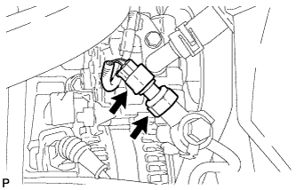

POWER STEERING OIL PRESSURE SWITCH > REMOVAL |
| 1. REMOVE FAN AND GENERATOR V BELT |
Remove the fan and generator V belt (Click here).
| 2. REMOVE FRONT WHEEL |
| 3. REMOVE FRONT FENDER APRON SEAL RH |
Remove the 4 clips and front fender apron seal RH.
| 4. DRAIN POWER STEERING FLUID |
| 5. REMOVE POWER STEERING OIL PRESSURE SWITCH |
|  |
Disconnect the power steering oil pressure switch connector.
Remove the power steering oil pressure switch.
Remove the O-ring from the power steering oil pressure switch.